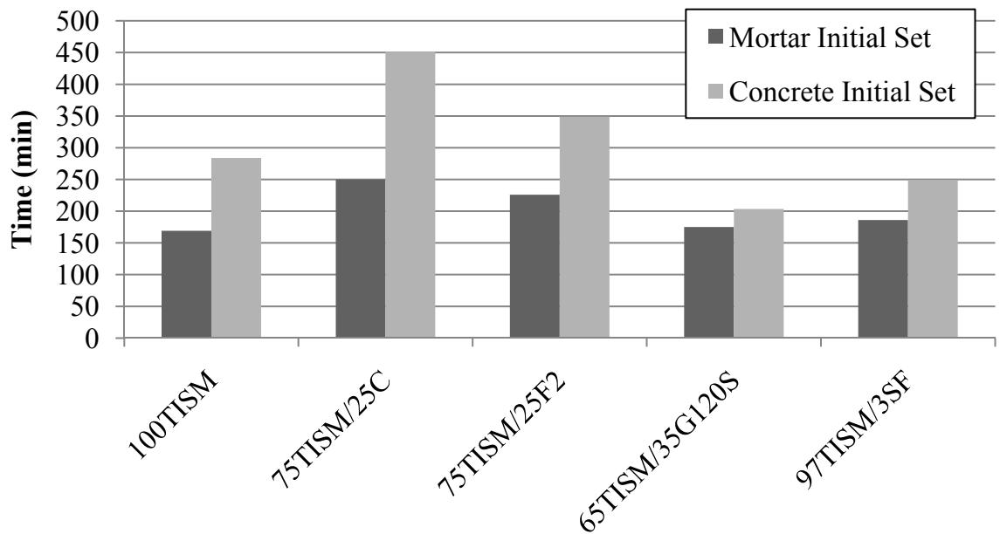
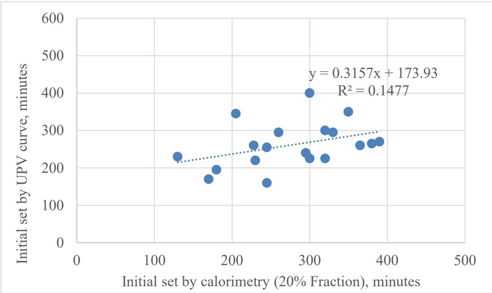
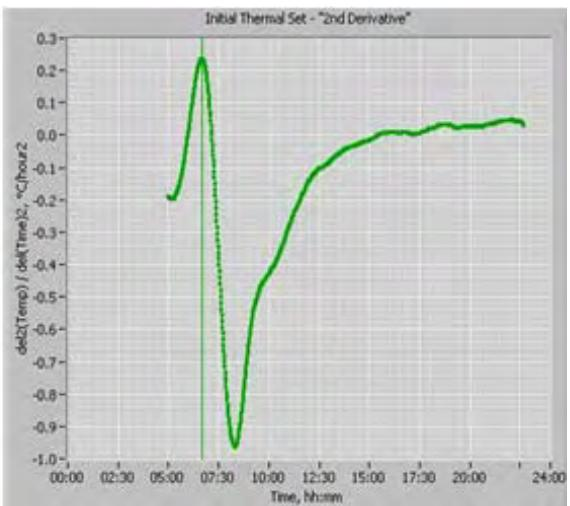
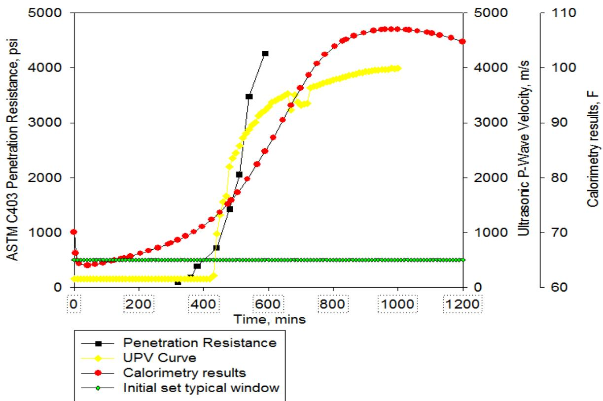
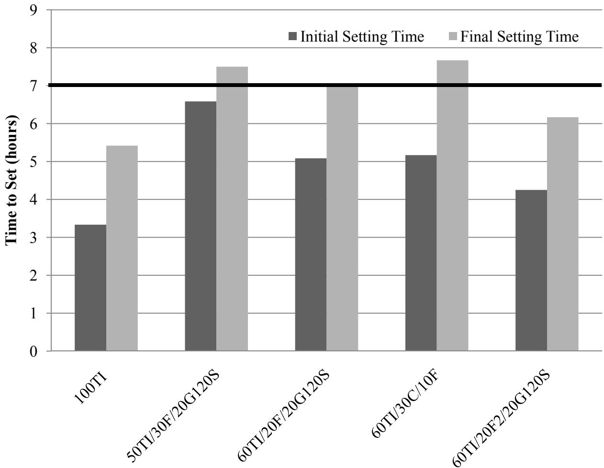
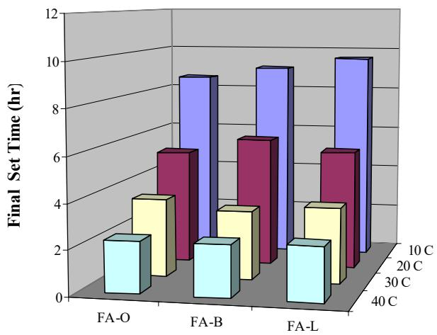

Initial Set
Initial set is a specific kinetic stage within cement hydration where the paste transitions from a fluid state to a rigid solid [3]. This transition marks the point in time when fresh concrete shifts from a plastic to a rigid state, characterized by the cessation of plasticity and the beginning of interaction between hydration products [1]. Consequently, the speed of sound through the material increases as the medium shifts from liquid-like to solid-like behavior [3], marking the opening of the sawing window for pavement joints and the beginning of strength gain. Initial set is governed by the rate of cement hydration, which is influenced by mixture chemistry, supplementary cementitious material type and dose, and temperature [1].
Sources (12)
Measurement Methods
Mortar setting tests using normal consistency do not correlate with concrete initial set times due to differing water-to-cementitious materials ratios and admixture usage. [2]

Final set for Type ISM cement mixtures [2]Ultrasonic Pulse Velocity (UPV)
The initial set is determined as the inflection point where sound velocity through the concrete sample begins to increase rapidly, which corresponds to the physical transition when hydration products begin to interlock and create a continuous solid skeleton [1]. Because it provides a more direct measurement of the setting transition than thermal methods [1], Ultrasonic Pulse Velocity (UPV) is utilized with a measurement setup that employs a wooden frame to stabilize the sample and transducers; in this configuration, a gel couplant is applied between the lower transducer and the mold bottom, while the top transducer rests on a floating polyethylene disk [3]. Within these measurements, P-waves are preferred over S-waves because they exhibit higher signal-to-noise ratios and are less sensitive to sample-transducer contact issues [3].
 Typical UPV data with initial set taken as the time when the velocity starts to rise, as marked [1] [1]
Typical UPV data with initial set taken as the time when the velocity starts to rise, as marked [1] [1]
Calorimetry and Thermal Analysis
The calorimetry (20% Fraction Method) utilizes the temperature-time curve from a semi-adiabatic calorimeter, where the initial set is estimated at the point where temperature reaches 20% of the peak rise. However, Taylor & Wang 2015 found this method poorly correlated with actual setting behavior (R² = 0.15) for the mixtures tested [1]. Alternatively, initial thermal set time is defined as the point where the first derivative of the temperature curve reaches its highest value, indicating the fastest rate of temperature increase [4].

Initial set time determined by calorimetry versus UPV [1]The derivative method for determining initial set from heat evolution curves is sensitive to environmental factors and extraneous data peaks, which can introduce variation in results [5]. This sensitivity requires careful data processing to distinguish true hydration signals from noise [5].

Determining initial set time from the derivatives method [5]Penetration Resistance (ASTM C403)
Penetration Resistance (ASTM C403)
Standard reference method using a penetrometer to measure mortar stiffening. Initial set corresponds to a specific penetration resistance value. Used as the reference standard for validating UPV and calorimetry methods. [1]

Plots from different measurement techniques for a single mix [1] [1]Factors Affecting Initial Set: Mixture Chemistry and SCMs
In mixture chemistry, increasing alkali content accelerates hydration, whereas supplementary cementitious materials generally slow hydration. However, specific SCM types and doses can alter these effects; for instance, increasing fly ash replacement from 20% to 30% significantly extends initial set time, though Class F fly ash causes an unexpected decrease in set time attributed to its increased fineness compared to Class C fly ash [6]. Similarly, Grade 120 GGBFS reduces initial set time relative to standard Portland cement due to its finer grind, while silica fume and metakaolin decrease set times when used without a water reducer [6]. This is further evidenced by Type IPM cement containing silica fume, which exhibits significantly lower initial set times (110–200 minutes) compared to Type I/II PC (140–225 minutes) due to the increased fineness of the silica fume blend [6].
Other factors influencing setting behavior include gypsum and Portland cement proportions. Gypsum addition to portland cements controls aluminate reactions and substantially influences initial set time through sulfur oxide content, which is typically maintained between 2.5% and 3.0% equivalent SO3 [2]. Additionally, the total portland cement content directly affects initial set duration, as higher Portland cement proportions decrease set times for a given water-to-cementitious materials ratio [2].

ASTM C403 setting time for hot cured mixture designs [2]Increasing fly ash replacement dosages delays concrete sawing times due to slower hydration rates, particularly under cooler ambient conditions [7].
Factors Affecting Initial Set: Temperature and Aggregates
Increasing mixture temperature accelerates hydration, though the magnitude of initial set time reduction differs by cement source; for example, increasing temperature from 70°F to 90°F reduced set times by only 0.6–0.7 hours for Holcim cements but 0.8–1.1 hours for Lafarge cements [8]. This variation suggests that the sensitivity of initial set time to hot weather is dependent on specific clinker chemistry and SCM reactivity rather than a universal response [8]. Regarding aggregate type, harder aggregates such as quartzite or granite did not significantly shift the UPV-sawing correlation in Taylor & Wang 2015 [1], nor do they significantly alter the correlation between initial set and sawing time compared to limestone-based mixtures [3].
 Comparison of setting and average air temperature [3]
Comparison of setting and average air temperature [3]
For a 40% fly ash replacement, decreasing the curing temperature from 40°C to 10°C increases initial set time by 6.3 hours and final set time by 9.3 hours [5].

Effect of fly ash type and temperature on set times [5]Factors Affecting Initial Set: Admixtures and Water Content
Doubling the dosage rate of Pozzolith 200N water reducer significantly reduces initial set time, particularly in mixtures containing Class C fly ash which exhibits incompatibility with low-range water reducers [6]. This acceleration can be driven by the fact that water adsorption by specific cementitious components can reduce particle lubrication and accelerate initial set times [2].
 Set time and mortar flow for mixtures containing Type I/II PC [6]
Set time and mortar flow for mixtures containing Type I/II PC [6]
The absorbency rate of superabsorbent polymers (SAP) directly impacts fresh concrete workability and setting behavior because as SAP absorbs water from the mixture, less water is available for lubrication, while the resulting gel-like structures influence internal water distribution [9]. Consequently, the incorporation of superabsorbent polymers (SAP) into concrete mixtures slightly delays both initial and final setting times relative to control mixtures, likely due to an increase in the effective water-to-cement ratio resulting from insufficient water absorption by the SAP during mixing [9].
Relationship Between Initial Set and Sawing Time
The sawing window opens after initial set, with Taylor & Wang 2015 establishing that early entry sawing begins ~220 min after UPV initial set. In contrast, conventional sawing begins ~310–390 min after UPV initial set [1]. The constant time interval between initial set and sawing suggests that once hydration begins, the rate of hydration remains similar across different mixtures regardless of the absolute setting duration [3].
 (a). Early entry sawing time versus initial set from UPV measurements [1]
(a). Early entry sawing time versus initial set from UPV measurements [1]
 (b). Conventional sawing time versus initial set from UPV measurements [1]
(b). Conventional sawing time versus initial set from UPV measurements [1]
Field Performance and Autogenous Shrinkage
In field applications, initial set times can vary significantly based on ambient conditions; for example, a ternary mixture placed in Emigrant Gap, California, achieved initial set at 2.32 hours under varying temperatures and wind speeds [10], while a ternary mixture used in a Kansas bridge deck construction reached initial set at 3.66 hours, demonstrating how specific mix designs and environmental conditions influence setting duration [10]. In latex-modified concrete (LMC-VE), autogenous shrinkage measurements are initiated using initial comparator readings taken at the moment of initial set to establish a baseline for early-age deformation [11]. The magnitude of autogenous shrinkage in LMC-VE is higher than in other concrete systems due to lower water-to-binder ratios and increases further with higher latex content [11].
Field Practices for Drag Texturing
Artificial turf drag texturing operations should be delayed if there is excessive bleed water to prevent the turf from getting plugged with grout or dragging larger aggregates through the pavement surface [12]. To achieve the desired texture during these drag operations, a minimum length of 5 ft. of turf must be in contact with the concrete at all times [12].
The artificial turf used for drag texturing must have a molded polyethylene pile face with 0.6- to 1.3-in. long curled and/or fibrillated blades, with no straight, smooth monofilament blades allowed [12]. Additionally, the minimum weight requirement for the artificial turf material used in drag texturing is 60 oz/sy [12].
Related
References
- P. Taylor and X. Wang, "Comparison of Setting Time Measured Using Ultrasonic Wave Propagation with Saw-Cutting Times on Pavements," National Concrete Pavement Technology Center, Ames, IA, Rep. TR-675, 2015. [Online]. Available: https://www.intrans.iastate.edu/wp-content/uploads/2018/03/PCC_setting_time_and_joint_sawing_w_cvr.pdf
- P. Tikalsky, P. Taylor, S. Hanson, and P. Ghosh, "Development of Performance Properties of Ternary Mixtures: Laboratory Study on Concrete," National Concrete Pavement Technology Center, Ames, IA, Rep. TPF-5(117), 2011. [Online]. Available: https://www.intrans.iastate.edu/research/completed/development-of-performance-properties-of-ternary-mixtures-laboratory-study-on-concrete/
- P. Taylor and X. Wang, "Concrete Pavement MDA: Comparison of Setting Time Measured Using Ultrasonic Wave Propagation With Saw-Cutting Times on Pavements in Iowa," National Concrete Pavement Technology Center, Ames, IA, Rep. TPF-5(205), 2014. [Online]. Available: https://www.intrans.iastate.edu/research/completed/comparison-of-setting-time-measured-using-ultrasonic-wave-propagation-with-saw-cutting-times-on-pavements-in-iowa/
- K. Wang, J. M. Ruiz, J. Hu, Z. Ge, Q. Xu, J. Grove, and R. Rasmussen, "Simple and Rapid Test for Monitoring the Heat Evolution ..., Phase III," National Concrete Pavement Technology Center, Ames, IA, 2008. [Online]. Available: https://www.intrans.iastate.edu/wp-content/uploads/2018/03/CalorimeterReportPhaseIII.pdf
- K. Wang, Z. Ge, J. Grove, J. M. Ruiz, R. Rasmussen, and T. Ferragut, "Simple and Rapid Test for Monitoring the Heat Evolution of Concrete Mixtures, Phase 2," Center for Transportation Research and Education, Ames, IA, 2007. [Online]. Available: https://www.intrans.iastate.edu/wp-content/uploads/2018/03/calorimeter.pdf
- P. Tikalsky, V. Schaefer, K. Wang, B. Scheetz, T. Rupnow, A. St. Clair, M. Siddiqi, and S. Marquez, "Development of Performance Properties of Ternary Mixes, Phase 1," Center for Transportation Research and Education, Ames, IA, Rep. TPF-5(117), 2007. [Online]. Available: https://www.intrans.iastate.edu/research/completed/development-of-performance-properties-of-ternary-mixes-phase-1/
- X. Wang, P. Taylor, and D. King, "Evaluation of Modified Concrete Mixture Proportions for the City of West Des Moines," National Concrete Pavement Technology Center, Ames, IA, 2016. [Online]. Available: https://www.intrans.iastate.edu/wp-content/uploads/2018/03/WDM_modified_concrete_mixture_proportions_w_cvr.pdf
- K. Wang and Z. Ge, "Evaluating Properties of Blended Cements for Concrete Pavements," Department of Civil, Construction and Environmental Engineering, Iowa State University, Ames, IA, 2003. [Online]. Available: https://www.intrans.iastate.edu/wp-content/uploads/2018/03/blended_cements-1.pdf
- B. Zhou, P. Taylor, and K. Wang, "Superabsorbent Polymer in Concrete to Improve Durability," National Concrete Pavement Technology Center, Iowa State University, Ames, IA, Rep. TR-793, 2025. [Online]. Available: https://www.intrans.iastate.edu/wp-content/uploads/2025/04/superabsorbent_polymer_in_concrete_w_cvr.pdf
- P. Taylor, P. Tikalsky, K. Wang, G. Fick, and X. Wang, "Development of Performance Properties of Ternary Mixtures: Field Demonstrations and Project Summary," National Concrete Pavement Technology Center, Ames, IA, Rep. TPF-5(117), 2012. [Online]. Available: https://www.intrans.iastate.edu/wp-content/uploads/2018/03/ternary_final_w_cvr.pdf
- K. Wang, B. M. Shankaramurthy, A. Anand, Y. Sargam, K. Freeseman, and B. Phares, "Performance Evaluation of Very Early Strength Latex-Modified Concrete (LMC-VE) Overlay," Institute for Transportation, Iowa State University, Ames, IA, Rep. TR-771, 2024. [Online]. Available: https://bec.iastate.edu/wp-content/uploads/2024/10/performance_evaluation_of_LMC-VE_overlay_w_cvr.pdf
- R. O. Rasmussen, P. D. Weigand, and D. S. Harrington, "Concrete Pavement Surface Characteristics: Key Findings and Guide Specifications," National Concrete Pavement Technology Center, Ames, IA, Rep. TPF-5(139), 2012. [Online]. Available: https://www.intrans.iastate.edu/wp-content/uploads/2018/03/surface-char-part2.pdf
Feedback on this page